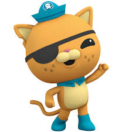
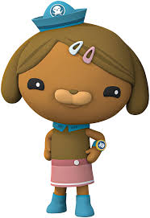
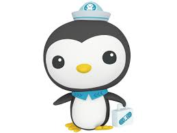

The animated children's TV series is a spin off of Octonauts. The Octonauts
expand their exploration beyond the sea and onto land; with new rides and new friends,
they prepare to protect any habitats and animals at risk on land or under the water.
There are new characters, vehicles, and missions in the new series, where every episodes
is a new adventure.
Web Adress: “Octonauts: Above & Beyond.” Rotten Tomatoes, 7 Sept. 2021,
www.rottentomatoes.com/tv/octonauts_above_and_beyond. Accessed 29 Apr. 2025.
I enjoy "Octonauts: Above & Beyond" because it emphasizes the importance of helping
the ecosystem in a way that is engaging and educational for children. The use of adorable
and diverse characters makes the series even more enjoyable. My favorite character is Kwazii,
the adventurous cat with a pirate-like attitude, as his bold personality adds excitement to
every mission.
This content was created with the help of A.I.



